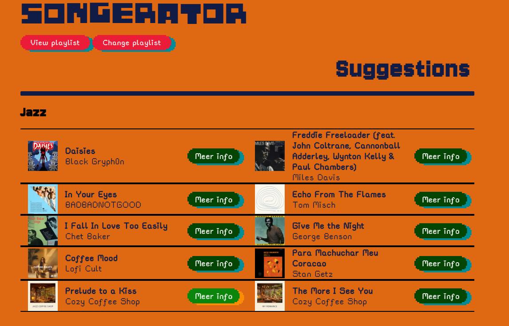
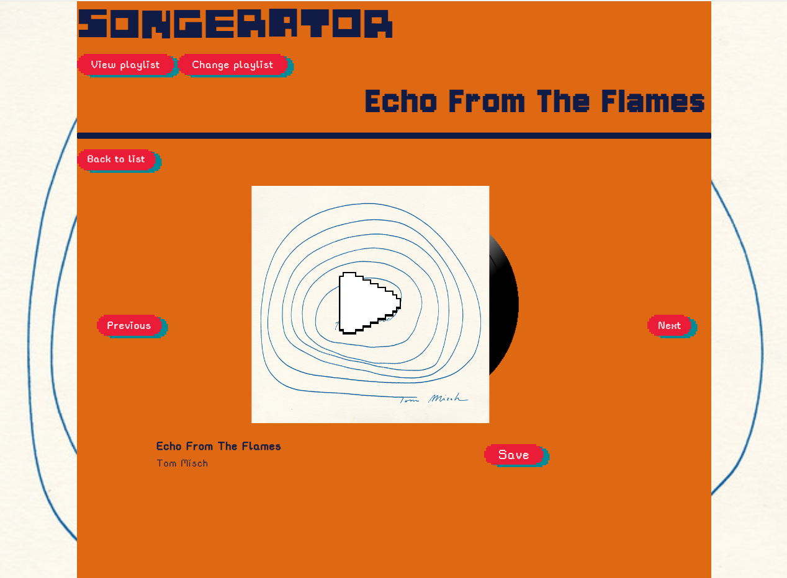

Voor API hebben wij de opdracht gekregen om een website te maken waarbij we gebruik maken van astro, minimaal een content API en twee web API 's. Het leek mij een leuke uitdaging om hier gebruik te maken van de Spotify content API. Hiermee wil ik liedjes ophalen uit de API aan de hand van een genre. Deze liedjes kan je beluisteren via hun detailpagina en vervolgens toevoegen aan een van je eigen playlists.


Voordat ik hier aan begon merkte ik dat ik moeite had met ervoor zorgen dat websites dezelfde consistente lay-out hebben en ook in dezelfde thematisering zitten. Daarom heb ik ook mijn tijd genomen om goed inspiratie op te doen en te kijken wat wil ik nou echt. Ik merkte al gauw Omdat ik hier bewuster mee bezig was dat de website veel beter bij elkaar hoorden en dat er een veel duidelijker thema was. Daarom ben ik ook ontzettend blij met het resultaat.
Ik heb twee web API’s gebruikt, de document Picture in Picture (PiP) API en de Local Storage API. De document PiP API heb ik gebruikt voor het display van de geselecteerde playlist, de Local Storage API heb ik gebruikt voor het tijdelijk opslaan van liedjes, waarna je ze in een keer kunt toevoegen aan de playlist.
Ik vond dit echt een super leuk project en ik ben echt super blij met wat ik hier voor heb gemaakt.